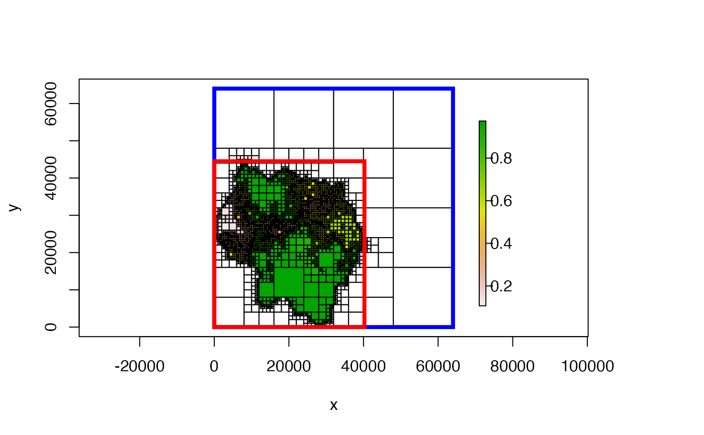

# S4 method for Quadtree
extent(x, original = FALSE)a Quadtree
boolean; if FALSE (the default), it returns the total
extent covered by the quadtree. If TRUE, the function returns the
extent of the original raster used to create the quadtree, before the
dimensions were adjusted by padding with NAs and/or the raster was
resampled.
an Extent object
library(quadtree)
habitat <- terra::rast(system.file("extdata", "habitat.tif", package="quadtree"))
# create a quadtree
qt <- quadtree(habitat, split_threshold = .1, adj_type = "expand")
# retrieve the extent and the original extent
ext <- extent(qt)
ext_orig <- extent(qt, original = TRUE)
ext
#> SpatExtent : 0, 64000, 0, 64000 (xmin, xmax, ymin, ymax)
ext_orig
#> SpatExtent : 0, 40250, 0, 44500 (xmin, xmax, ymin, ymax)
# plot them
plot(qt)
rect(ext[1], ext[3], ext[2], ext[4], border = "blue", lwd = 4)
rect(ext_orig[1], ext_orig[3], ext_orig[2], ext_orig[4],
border = "red", lwd = 4)
